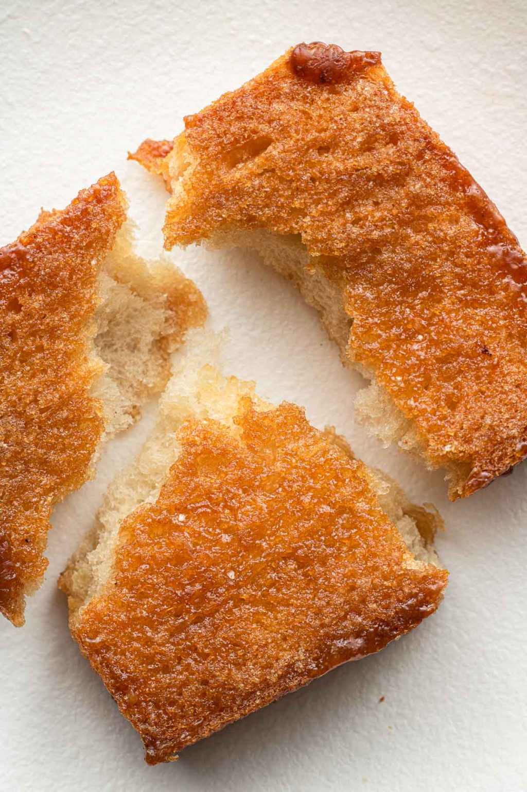

Ooh Yum!
Miso Honey Butter Toast

Description
Miso Honey Butter Toast is a savory andd sweet toast. The flavors blend the slight salt of miso with the sweetness of honey.
Ingredients
- 2 thick slices of milk bread or your favorite soft bread
- 1/2 (57g) stick of butter, softened
- 1/4 (55g) cup light brown sugar
- 1 heaping (28g) tbsp honey
- 1 1/2 - 2 (27-36g) tbsp white sweet miso paste
Steps
- In a bowl, mix together butter and light brown sugar. In another bowl whisk honey and miso paste. The honey loosens the miso, but you can mix the four ingredients together. (It may be an easier clean up, but a harder mixing job.)
- Spread a generous amount of the miso honey butter on all sides of the bread.
- Bake for 16-20 minutes. Flip the bread halfway through. It is done when it is toasty and carmelized.
- Remove from oven and place on a wire rack and allow to cool for 5-10 minutes.